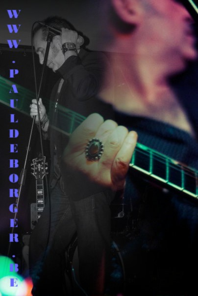

|
WWW.PAUL DE BORGER.BE, a concise complete statement |
 | |||
|
BLACK LOLAS featuring PAUL DE BORGER !
Paul's latest good rocking venture!
music and videos online for all to enjoy, |
||||
|
MCLARSJ ,
keep up with Mclarsj's updates and concert info
and take a look at the Mclarsj YouTube channel!
|
||||
|
DRUNKEN MARIA featuring PAUL DE BORGER |
||||
|
NACHT UND NEBEL , the popular 1980's band |
||||
|
A rare online review of the ORPHEUS FEELING album, |
||||